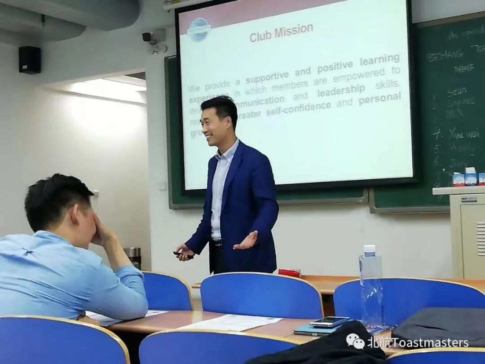
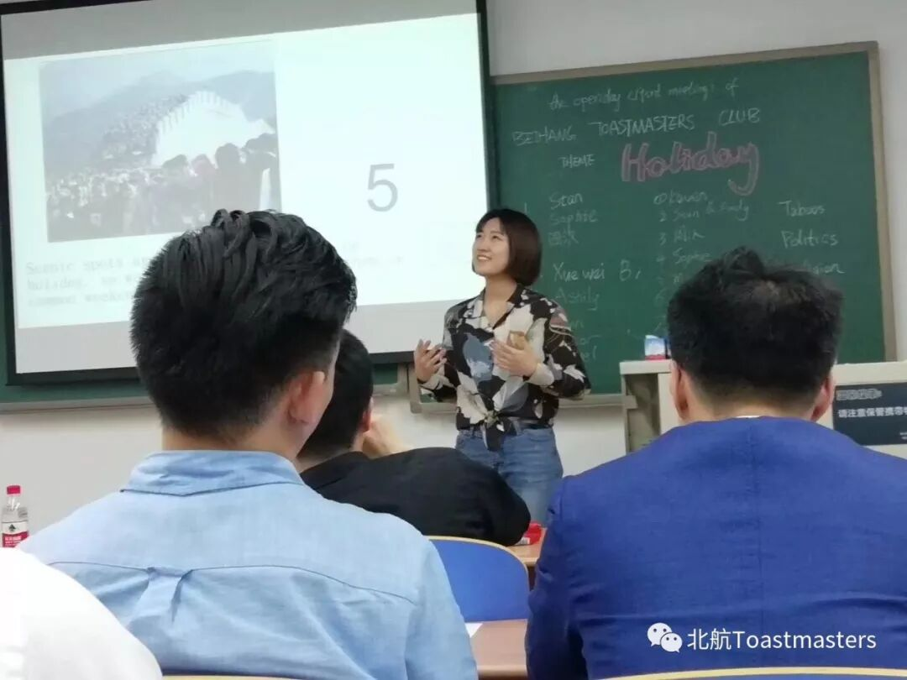
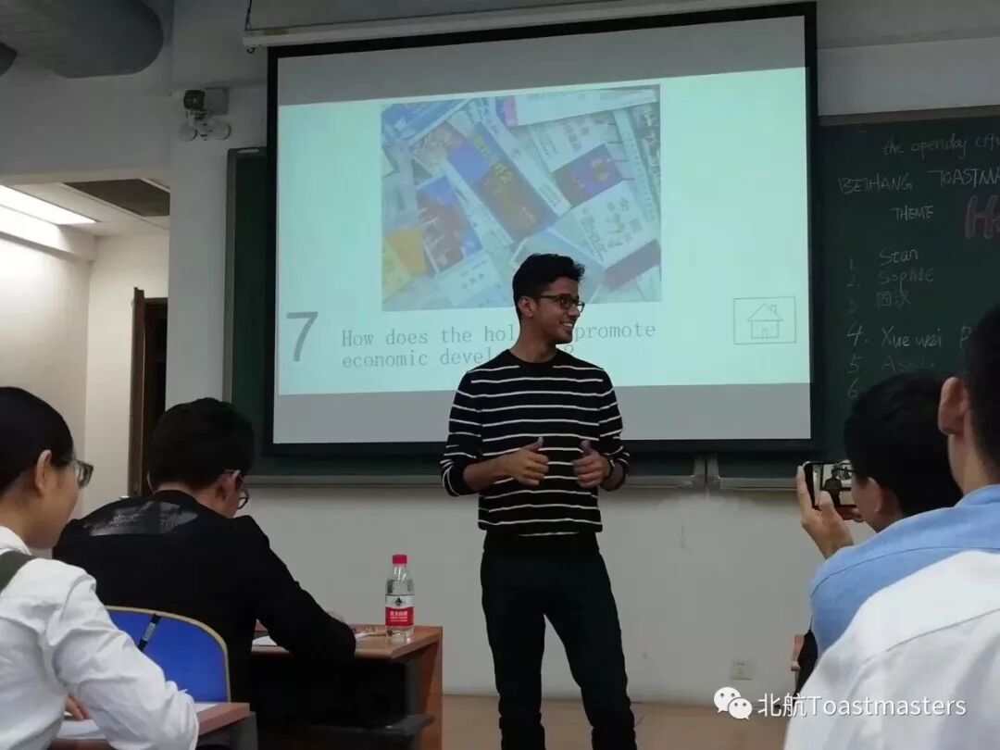
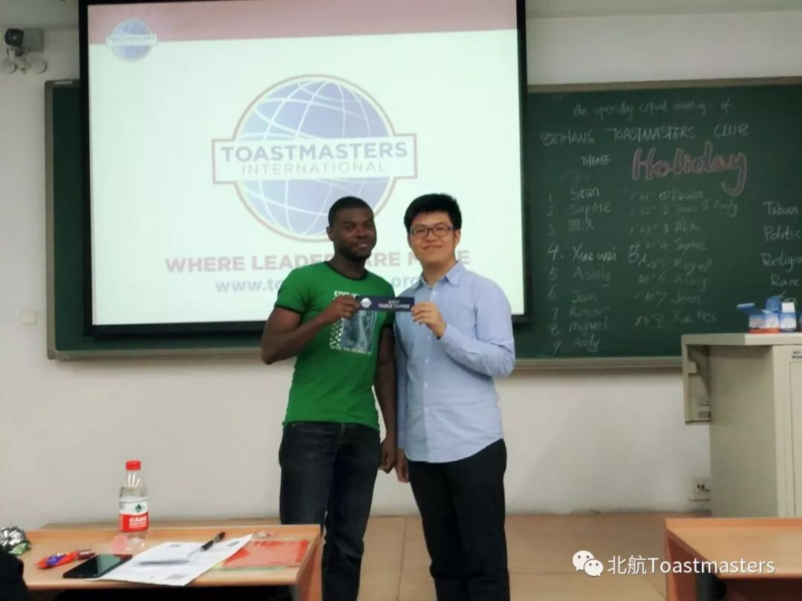
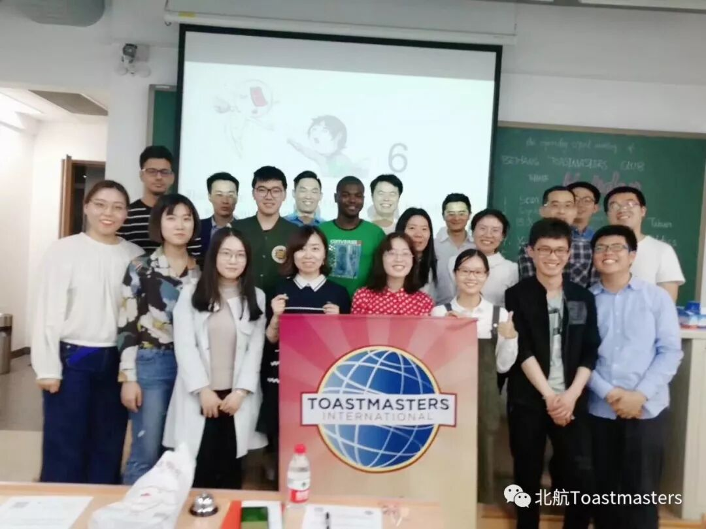

Beihang TMC had hold successfully Open-day event on April 20th evening, we had invited our area director Mr.Chad to give us a warmly welcome speech and also the introduce of Toastmasters International

Our theme today is holiday , the question is very easy to understand, Samuel as TTM, he prepared some good questions to lets the guests to share with with their opinions on holiday.Samuel did a good transfer for each speaker and make the atmosphere so warm.

Science spots are very crowed on holiday, do you prefer to go visit on holiday or weekends? Ashly would go on workday to visit science spots rather than holiday, she thinks if go on holiday you see people more than attractions.

How does the holiday promote economic development? Mr. Zhou from India now is study his master degree in Beijing university shared his opinion , he has been to several places of China, he believes online & offline holiday promotion really increase a lot of opportunities for people to spend their money, not only within China but also outside of China, global ecnoices are blooming by holiday promotion.

Kaisense made a speech about is a flower grows from a dead wood. Two years ago he was a shy boy, the reason why he had changed his personality is that he missed his beloved gril, once he became more outgoing person he got his current girlfriend, Kaisense joined Toastmaster club by chance, the more time he spent, the more value he received. He now is VPM of Beijing TMC, he believes the duty to spread what he has learned in toastmasters and to help more friends overcome their fear in their hearts and to help them enjoy a better life.

Miguel won the best table topic speech, he gave us the good comparison of DIY trip or group trip, personally he like DIY trip, because he loves adventure and freedom which he can explore during unplanned trip, he gave us the recommendation of joining group trip is help people to meet with more new friends. Congralutions for Miguel

All of your speech today encouraged us a lot, we made excellent open day tonight, our guest are also full of enegry and willing to know more about Beihang TMC, hope to see you all more often in coming events.

BeihangToastmasters Club is a students' union. At the same time, we belong to a non-profit international organization calledToastmasters International.
Toastmasters International (TI) is a non-profit educational organization that operates clubs worldwide for the purpose of helping members improve their communication, public speaking, and leadership skills.You can find us by the following map of Beihang University.

https://mp.weixin.qq.com/s/LfK-sdCwDrtNebIeGSO-bw
本页为抢救式本地归档，图文已永久保存。